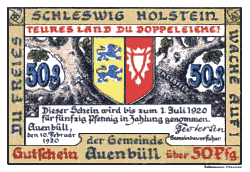

(The Germany History Network)
Schleswig-Holstein

Schleswig-Holstein Plebiscite. Notgeld.
*
Inhaltsverzeichnis
(Table of Contents)
History
Schleswig-Holstein, a Brief History
Notgeld
The Versailles Treaty, 28 June 1919, called for a plebiscite to affix Danish or German authority of certain towns in Schleswig-Holstein. (ARTICLE 109. The frontier between Germany and Denmark shall be fixed in conformity with the wishes of the population.) That plebiscite was held 10 February, 1920. The Notgeld notes were issued by local town councils and reflect the various views of the authorities.
Logo Font; Wittenberg Schwabacher
by the
Walden Font Company
You Are Our Visitor Since 14 October 2004
This Page was Last Updated
 Schleswig-Holstein, a Brief History
Schleswig-Holstein, a Brief History